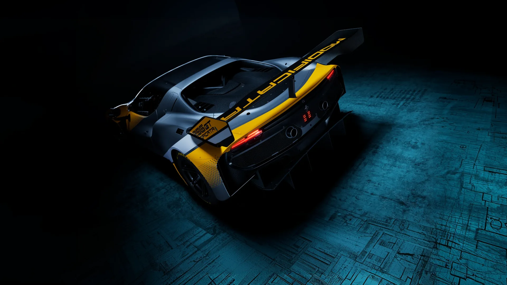
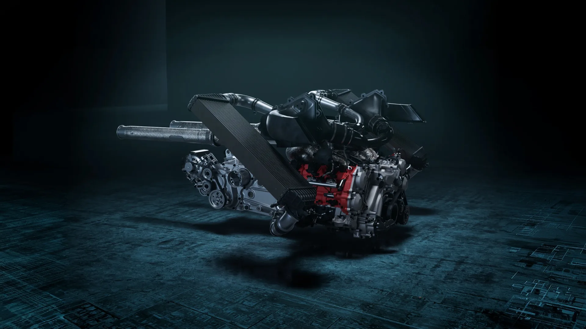
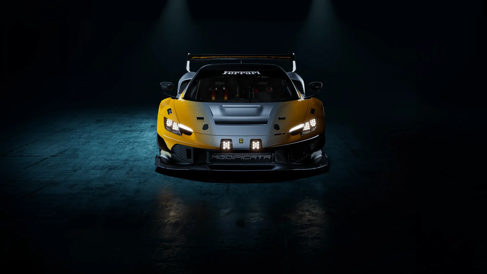
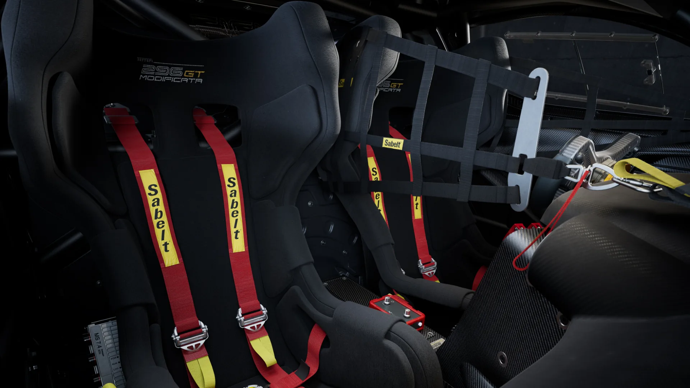
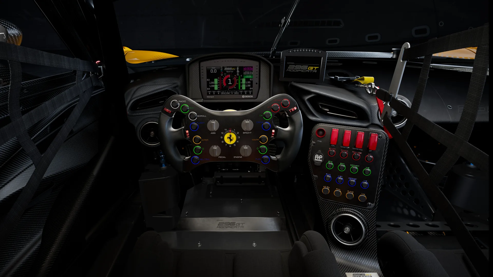
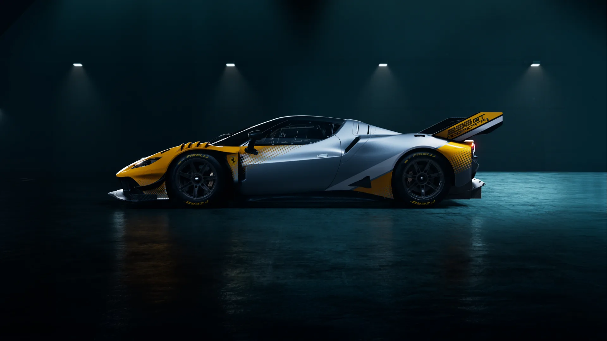
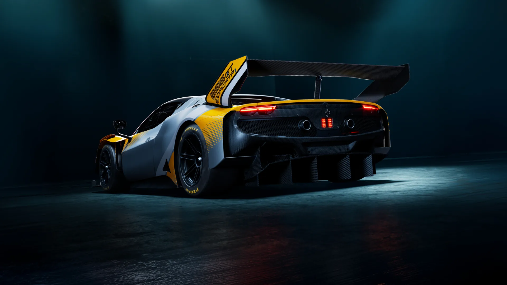

1Intro

2Engine

3Aerodynamics
To complement the increase in power, the 296 GT Modificata’s aerodynamics and cooling systems were re-engineered to meet the car’s greater performance demands. A new front hood maximizes heat dissipation, while revised vents and a dedicated airflow-management vane optimize thermal management during intensive track use.
An all-new slotted front splitter improves underfloor efficiency, generating additional downforce and enhancing high-speed stability. At the rear, a newly developed wing improves aerodynamic efficiency while preserving the car’s optimal balance and predictable dynamic behavior.


4Interior

5Brakes
New front brake discs, an additional air intake and an all-new cooling duct improve the braking system’s thermal management, providing more consistent performance and greater reliability.
The Motorsport ABS system delivers stable, predictable braking with precise modulation, making the car’s performance more accessible to drivers with varying levels of track experience.

6Equipment and options
7Club Competizioni GT
9Interest form
The most extreme model yet created for the Club Competizioni GT program. Ferrari Puerto Rico will contact you.